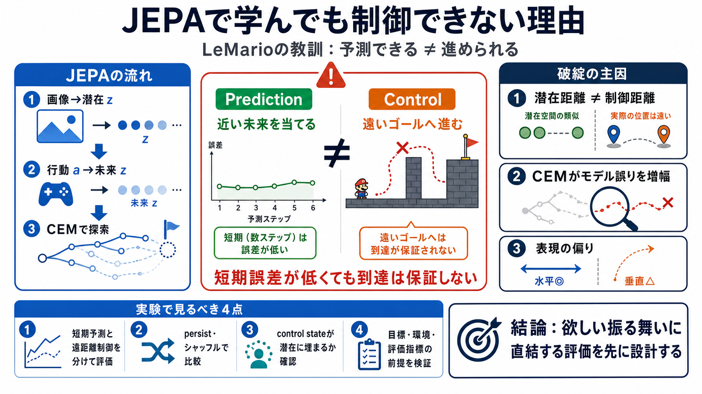

Representation Collapse in JEPA. Thanks to Yann LeCun, Joint-Embedding… | by Dzmitry Ashkinadze | Jul, 2026 | Level Up Coding
## Level Up Coding. # Representation Collapse in JEPA. Thanks to Yann LeCun, **Joint-Embedding Predictive Architectures …

JEPA（Joint-Embedding Predictive Architecture）で世界モデルを学んでも、探索ベースの制御が崩れることがある。LeMarioが突きつけたのは「予測できる ≠ 進められる」です。
短期の潜在予測誤差（1-step/5-step）が下がっても、遠距離ゴールに到達するとは限らない。この記事は「予測の指標」を「制御の指標」と同一視する危険を示す。
画像を低次元潜在（例：192次元ベクトル）に圧縮し、行動を与えたとき将来の潜在を予測する。目標は「未来がどんな見え方になるか」を表現として学ぶこと。
CEMは「目標潜在に近そう」を高得点にして行動列を選ぶ。だが、モデルが誤っていても“それっぽい未来”が高スコアになり、別地点で立ち止まる等の失敗を許す。
保持エピソードでの誤差や、アクションをシャッフルした比較などから、短期予測性能は一定以上に見えた。さらに、予測した潜在未来をCEMで探索すると“小さな目標への接近”も得られる。
目標が遠ざかると、障害物を越える・単一の遠距離ゴールへ確実に向かうことができなくなる。著者の整理は「予測器は学べたが、進展（control）の仕組みは学べていない」。
著者は予測器・表現・プランナー・評価を分解して原因を特定しにいく。鍵は「制御に意味のある距離（control state）」と「予測に有用な情報」が一致しない点。
水平位置は潜在からかなり回復できた。一方で、垂直方向（ジャンプや障害物越えに関わる要素）は表現が弱く、失敗が再現された。
作者は「予測ができている」ように見える指標が、実は persist（何もしない）に近い可能性を問題視する。保持・シャッフル比較などで評価する姿勢が重要になる。
Push-T側の成功要因として、専門軌跡からの近傍目標、固定カメラ、滑らかな動き、視覚類似が進展と一致する条件などが挙げられる。LeMarioではこれらを大きく変更しており、アーキテクチャ忠実度より前提検証が重要だと結論づける。
記事の核を、再現・改善に直結する形で要約する。
最大の教訓は、アーキテクチャ忠実度よりも「成立する前提（データ生成・見え方・目標の意味づけ・評価指標）」を早期に検証すること。欲しい振る舞いに直結する評価を先に設計するべきだ。
## Level Up Coding. # Representation Collapse in JEPA. Thanks to Yann LeCun, **Joint-Embedding Predictive Architectures …
Jun 16, 2026 — Representation collapse is the failure where the encoder learns to output the same constant embedding for…
Yann LeCun’s roadmap for autonomous machine intelligence, from the 2022 position paper through I-JEPA, MC-JEPA, V-JEPA, …
# 🧩What is JEPA? Joint Embedding Predictive Architecture Framework Prediction Within the Latent Space. TLDR:Learn about …
This article explores how JEPA integrates into the broader framework of World Models. It details essential components su…